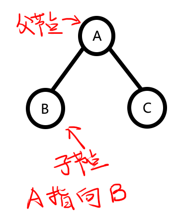

二叉树的深度优先遍历
写在前面：
二叉树的遍历是指按照某种顺序访问树中的所有节点，确保每个节点被访问一次。常见的遍历方式有三种：前序遍历、中序遍历和后序遍历（均属于深度优先搜索，DFS）。
相关题目列表：
二叉树基础知识
1.术语
节点(Node)：是二叉树的基本组成单位，包含：
数据域（存储数据）
左指针（指向左子树）
右指针（指向右子树）
根节点(Root)：树的顶端节点，没有父节点的唯一节点
假如我们有一棵二叉树，如图：
这时，树的顶端节点，没有父节点（没有被线引出）的唯一节点，也就是节点A，就是根节点。
父节点(Parent)和子节点(Child)：
若x节点指向y节点，则x节点是y节点的父节点，y节点是x节点的子节点
我们使用图中的A,B节点做示例：

因为A指向B，所以称A是B的父节点，B是A的子节点。
叶子节点(Leaf)：没有子节点的节点
顾名思义：
2.代码实现
既然知道了二叉树的大概知识，那么如何实现二叉树？
我们一般用链式存储来实现。
1 | |
用图示例一下就是：
上面我们已经知道了，这就是二叉树的一个节点(Node)，它拥有：
- 数据域，就是代码中的val
- 左指针，指向左子树
- 右指针，指向右子树
TreeNode(int x) : val(x), left(NULL), right(NULL) {}这段代码是用来初始化节点的。
从这里我们也可以发现，二叉树实现时，使用的是链表，只有在知道了上一个节点的情况下，才能访问下一个节点。
所以我们不能像数组一样去用下标索引二叉树里面的数据，而是一个个的遍历二叉树节点，直到找到我们需要的数据。
那么，常见的遍历方式有三种：前序遍历、中序遍历和后序遍历。
前序遍历
英文名为 Preorder Traversal ，前序遍历。
前序遍历遵循**”根节点→左子树→右子树”**的顺序访问所有节点。速记“根左右”。
遍历顺序
- 访问当前节点（根节点）
- 递归遍历左子树
- 递归遍历右子树
示例
假如有棵二叉树：
根据**”根节点→左子树→右子树”**，应先访问1节点：
再访问其左子树2节点：
此时，2节点为新节点，故暂时停止对1节点的先序遍历，先对2节点进行先序遍历，将2节点作为根节点遍历：
根据**”根节点→左子树→右子树”**，应先访问2节点，再访问4节点：
此时，4节点为新节点，故暂时停止对2节点的先序遍历，先对4节点进行先序遍历，但发现4节点的左右节点都为空（null），所以4节点的先序遍历结束，回到2节点的先序遍历。
因2节点的根节点与左节点都已经访问过，所以接下来应该访问右节点，也就是5节点：
同理，5节点的左右节点都为空（null），先序遍历结束，回到2节点的先序遍历。
2节点的先序遍历已经完成根节点→左子树→右子树的遍历，故结束，回到1节点的先序遍历：
1节点的根节点，左子树都已经遍历过，根据**“根节点→左子树→右子树”**顺序，接下来应该遍历右子树，故访问3节点：
同理，3节点为新节点，故暂时停止对1节点的先序遍历，先对3节点进行先序遍历，但发现4节点的左右节点都为空（null），所以3节点的先序遍历结束，回到1节点的先序遍历。
又因为1节点的遍历已经遍历了右子树，根据**“根节点→左子树→右子树”**顺序，所以1节点遍历结束。
自此，整个二叉树已经遍历完毕，我们将之前的过程整理一下可得：
那么，怎么用代码来实现它呢？
C++实现前序递归遍历
看了上面关于遍历顺序的详解，相信大多数人脑子里很可能会想到一个词“递归”。
是的，递归的遍历二叉树是一个常用的遍历实现方法。
具体实现如下：
1 | |
这是一个实现二叉树前序遍历的递归函数，我们将遍历结果存储在 vector<int> result 中。
1.函数注册
1 | |
TreeNode* root：当前子树的根节点指针vector<int>& result：用于存储遍历结果的引用
2.递归终止条件
1 | |
检查当前节点是否为空（到达叶子节点的子节点），防止无限递归，是树的终止，表明某个节点的遍历结束，向上返回。
3.前序遍历核心操作
1 | |
按照根→左→右的顺序，首先访问当前节点，也就是将当前节点的数据压入result容器中。
这是”前序”（Preorder）的关键体现——先访问根节点。
4.递归处理左子树
1 | |
对当前节点的左子树进行相同的前序遍历，先暂停此时的根节点的遍历，转向其左子树的遍历。这里体现出了递归——我们在函数的定义中使用函数自身。
简单来说，就是让这个函数拿着上一个函数没有算完的结果去计算，一层层的分发下去，直到最底层的函数计算出终值后向上返回答案。
5.递归处理右子树
同理，左子树处理完成后，再处理右子树。右子树的处理是在左子树完全处理完毕后才进行，也是递归。
1 | |
到这里代码就告一段落。再举个例子：
- 访问节点1 → [1]
- 递归左子树（节点2）
- 访问节点2 → [1,2]
- 递归左子树（节点4）
- 访问节点4 → [1,2,4]
- 左子树空返回
- 右子树空返回
- 回到节点2处理右子树（节点5）→ [1,2,4,5]
- 回到节点1处理右子树（节点3）→ [1,2,4,5,3]
- 最终结果：[1,2,4,5,3]
- 时间复杂度：O(n)（每个节点访问一次）
- 空间复杂度：O(h)（h为树高，即递归深度）
递归实现虽然简洁，但在处理极深二叉树时可能有栈溢出风险，此时应改用栈来非递归实现。
那么如何非递归实现呢？
C++实现前序迭代遍历
深究递归的原理，我们会发现递归实际上每一次调用函数都会把上一个函数的各种数据压入调用栈。也就是说递归实际上程序员让计算机使用栈来完成了遍历。
因此，我们也可以直接使用栈来实现前序遍历。
1 | |
1. 函数定义和初始化
1 | |
返回前序遍历结果的整数向量
初始化result容器，用来存储遍历结果。如果根节点为空，直接返回空结果。
2. 栈的初始化
1 | |
初始化一个栈，其数据类型是TreeNode*，这就是我们遍历需要使用的栈。
根节点push入栈（相当于递归的起始点）
3. 核心循环
1 | |
当循环条件栈不为空时继续处理
节点处理：
新建一个TreeNode*，用于获取当前栈最上方的（也就是最后入栈的）节点，访问它，再将这个节点移除出栈。
注：前序特性：先访问根节点
4. 子节点处理（关键部分）
1 | |
入栈顺序：
先将右子节点入栈，后将左子节点入栈（因为栈是后进先出结构），下一个循环处理时会先处理左子节点，满足
根→左→右的顺序。
5. 返回结果
1 | |
- 当栈空时，遍历完成，返回结果列表
到这里代码就告一段落。再举个例子：
还是以这颗二叉树为例：
步骤分析：
首先我们将根节点（1节点）入栈：
接着开始循环，
访问1节点，将1节点放入result数组，再将1节点出栈，表示已经访问完毕。
接着，分别让1节点的右子节点和左子节点入栈：
根据顺序，我们取栈最上方的2节点（也就是1节点的左子节点，符合根左右），访问它，将它放入result数组表示已经访问完毕，并出栈（pop）。
接着，分别让2节点的右子节点和左子节点入栈：
同理，取栈最上方的4节点，访问并将它放入result数组表示已经访问完毕，最后出栈。再分别让4节点的右子节点和左子节点入栈.
我们发现4节点的右子节点和左子节都为空，故没有节点入栈，无伤大雅：
同理，取栈最上方的5节点，其余操作与4节点相同：
接着取栈最上方的3节点，访问，入result数组，出栈，且没有子节点入栈：
循环条件中，栈空，循环结束，输出result数组。
最终结果：[1,2,4,5,3]
这就是使用栈的非递归代码实现过程，手动维护栈，控制更灵活，也是面试中的高频考点。
- 时间复杂度：O(n)（每个节点访问一次）
- 空间复杂度：O(h)（h为树高，即递归深度）
那么谁更有优势？
| 特性 | 递归实现 | 非递归实现 |
|---|---|---|
| 代码复杂度 | 简单直观 | 稍复杂 |
| 空间复杂度 | O(h)（调用栈，h为树高） | O(h)（显式栈） |
| 适用场景 | 树深度不大时 | 树深度较大时（避免栈溢出） |
| 可读性 | 高 | 中等 |
可以看到，实际上并无优劣之分，只是使用场景不同。
中序遍历
英文名为 Inorder traversal ，中序遍历。
中序遍历遵循**“左子树→根节点→右子树”的顺序访问所有节点。速记“左根右”**。
遍历顺序
- 递归遍历左子树
- 访问当前节点
- 递归遍历右子树
思路和前序遍历实际上差不多，如图：
先遍历根节点的左子树，取2节点。
暂停对1节点的遍历，先对2节点进行中序遍历，取4节点。
暂停对2节点的遍历，先对4节点进行中序遍历。
我们发现4节点是叶子节点，左右子树皆为空，故访问它，并返回对2节点的中序遍历：
这时，根据**“左子树→根节点→右子树”**的顺序，访问2节点。
访问完成后，访问2节点的右子树，取5节点。
暂停对2节点的遍历，先对5节点进行中序遍历。
5节点是叶子节点，左右子树皆为空，故访问它，并返回对2节点的中序遍历：
此时2节点的中序遍历已经结束，返回1节点的中序遍历。
根据**“左子树→根节点→右子树”**的顺序，访问1节点：
暂停对1节点的遍历，取1节点的右子树，3节点。
3节点为叶子节点，访问并返回对1节点的遍历。
此时1节点也已结束遍历。
此刻，所有遍历过程结束，整棵树都已完成遍历。
最终结果：[4,2,5,1,3]
C++实现中序递归遍历
1 | |
对比前序遍历，只是将 遍历左子树 与 访问根节点 的顺序改变了一下，故不再赘述。
C++实现前序迭代遍历
举一反三，是不是改一点前序遍历代码顺序就把中序遍历写出来了？
于是我写出以下代码：
1 | |
实际上，这个代码是错的。
$$
输入：root =[1,null,2,3]
输出：[1,2,3]
预期结果：[1,3,2]
$$
为什么不能像递归一样再前序遍历的基础上更改呢？
因为：
- 中序是”左→根→右”，必须先把左子树全走完才能访问根节点
- 前序的栈操作是”路过即访问”，而中序需要”路过但不立即访问”，也就是说处理和访问的时机不相同。
- 中序遍历需要：
- 用一个指针专门往左子树钻（
while(left)） - 从栈里弹出的才是真正要访问的节点
- 必须等所有左子树处理完才能处理自己
- 用一个指针专门往左子树钻（
前序后序是”看到就处理”，中序是”等左边全完事再处理”，所以需要完全不同的代码结构。
因此，写出如下代码：
1 | |
1.左子树处理
1 | |
沿着左子树路径一直走到最底部。
将当前节点压入栈（保留待后续处理），而后将current移向左子节点，使栈中保存了从根到最左节点的路径。
2.节点访问
1 | |
处理栈顶节点（当前子树的最左节点）
- 操作：
- 弹出栈顶节点（此时该节点没有未处理的左子树）
- 将节点值加入结果集
实现了”左子树处理完后访问根节点”的中序要求。
3.转向右子树
1 | |
开始处理右子树，将current指向右子节点。
如果右子节点存在，下一轮循环会处理它的左子树；如果右子节点为空，下一轮会继续弹出栈中节点。
到这里代码就告一段落。
再举个例子：
老样子，我还是使用这个经典的12345：
步骤分析：
初始化完成后，我们开始循环。
从根节点（1节点）开始，current指针指向1节点，1节点入栈。
current指针指向1的左节点——2节点。同理，2节点入栈。
current指向2的左节点——4节点，且4节点入栈。
这时我们发现4节点是个叶子节点，也就是说它的左子节点是null：
这时，将不执行if语句，进入余下的函数区。
将指针指向栈最上方的节点（4节点），并将4节点出栈。
这时访问current指针指向的节点，放入result数组。
并将指针指向4节点的右子节点，null：
进入下一个循环，发现指针还是null，但是栈非空，故让current指向栈最上方的2节点，并将2节点出栈。
这时访问current指向的2节点，放入result数组。
根据代码，将current指针指向2节点的右子节点，5节点。
进入下一个循环，current指针非空（为5节点），故将5节点入栈，且令current指针指向节点5的左子节点——null。
同理，进入下一个循环，current指针为null，跳过if语句进入剩余函数区。
current指针指向栈最上方的5节点，5节点出栈，访问5节点放入result数组。
接着使current指向5节点的右子树，为空（null）。
进入下一个循环，current为空，跳过if语句进入剩余函数区。
同理，current指针指向栈最上方的1节点，1节点出栈，访问1节点放入result数组。
接着使current指向1节点的右子树，为3节点。
进入下一个循环，current非空，其指向的3节点入栈。
current指向3节点的右子树，null。
下一个循环，current为空。使current指针指向栈最上方的3节点，3节点出栈，访问3节点，放入result数组。
此时使current指针指向3节点的右子节点，null。
进入下一个循环，判断条件时发现current和栈都为空，循环结束。
自此，返回result数组，二叉树已经遍历完成。
最终结果：[4,2,5,1,3]
| 对比项 | 非递归实现 | 递归实现 |
|---|---|---|
| 栈管理 | 使用stack | 系统调用栈 |
| 空间效率 | 更优 | 受限于系统栈大小 |
| 代码复杂度 | 较高 | 简单直观 |
| 适用场景 | 深度大的树 | 深度小的树 |
| 执行效率 | 略高（无函数调用开销） | 略低 |
后序遍历
英文名为 Postorder traversal ，后序遍历。
后序遍历遵循**“左子树→右子树→根节点”的顺序访问所有节点。速记“左右根”**。
一、后序遍历详解
遍历顺序
- 递归遍历左子树
- 递归遍历右子树
- 访问当前节点（根节点）
特点
- 根节点最后被访问
- 适合删除树或计算子树属性
- 可用于表达式树的后缀表示（逆波兰表示法）
示例
对于二叉树：
1 | |
后序遍历结果为：4 → 5 → 2 → 3 → 1
C++实现
所有的后序遍历只需再前序的基础上更改即可，这里不再赘述。

图片来自代码随想录
1. 递归实现
1 | |
2. 非递归实现（使用栈）
1 | |
两种实现对比
| 特性 | 递归实现 | 非递归实现 |
|---|---|---|
| 代码复杂度 | 简单 | 较复杂 |
| 空间复杂度 | O(h)（隐式调用栈） | O(h)（显式栈） |
| 适用场景 | 树深度不大时 | 避免栈溢出时 |
| 可读性 | 高 | 中等 |
| 执行效率 | 函数调用开销 | 直接操作栈更高效 |
结语
算法是思想的雕琢刀。——《算法导论》
前序、中序、后序遍历不仅是代码的路径，更是思维的分形。
递归实现展现了算法的优雅本质，而非递归实现揭示了计算机真实的执行过程。
二者的关系如同诗歌与散文——前者凝练意境，后者清晰直白。
编程如修行，遍历见真章。
愿你在二叉树的每一处分支，都能找到属于自己的最优路径。